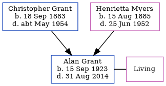

Alan Grant 1923 - 2014
[ Home ] | [ Calendar ] | [ Surnames Index ] | [ Family History ]An apprentice marine fitter and the youngest of 4 children of Christopher Grant (a ships boilermaker & plater) and Henrietta Myers, Alan Grant was born in Tynemouth, Tyne and Wear, England on Sep 15, 1923<span class="citation">1,2,3</span>. He married Doris Armstrong in Tynemouth around Nov 1947<span class="citation">4</span>. On Sep 29, 1939, he lived on 4 Coast Road in Tynemouth<span class="citation">1</span>. <p>He died on Aug 31, 2014 in Wallsend, Tyne and Wear, England<span class="citation">3</span>.
Parents
- Christopher James was born on Sep 18, 1883
- Henrietta Briscoe Nicholson was born on Aug 15, 1885
Citations
- 1939 Register - Findmypast (was the son of the head of the household)
- England & Wales births 1837-2006 - Findmypast
- United Kingdom Deaths - Findmypast
- England & Wales Marriages 1837-2005 - Findmypast
Media
England & Wales births 1837-2006 - BMD/B/1923/4/AZ/000497/055
England & Wales marriages 1837-2005 - BMD/M/1947/4/AZ/000556/071
United Kingdom Deaths - BMD/D/MILLEN/000185123
1939 Register - TNA/R39/2952/2952C/014/24
Family Tree
Generated by Ged2Site. Last updated on Jul 20, 2025